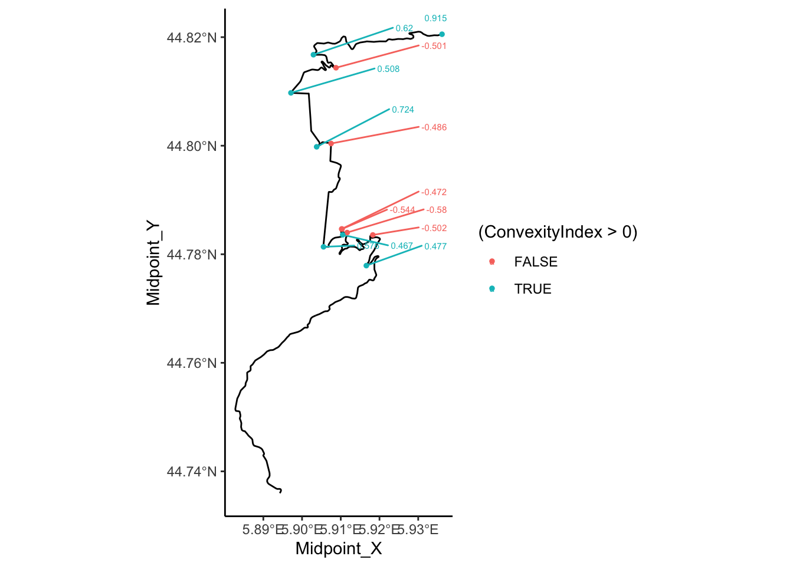

17 Stage Route Analysis
This chapter introduces several ideas relating to stage route analysis and the generation of “stage route profiles” that describe various features of the the route, such as its twistiness.
To a certain extent, stage route analysis could be considered as a static analysis complement to the pace notes created for a stage:
library("vembedr")
# Hayden Paddon describes pace notes
embed_url("https://www.youtube.com/watch?v=9q7EYVJL9XU")# See also this Team O'Neil tutorial:
# "Rally Stage Notes and Pace Notes Explained" https://www.youtube.com/watch?v=earjqfXGYzwStage route analysis also includes a consideration of elevation along the route. Analysis and review of route elevation is explored in more detail in a separate chapter.
17.1 Load in Base Data
As ever, let’s load in our stage data and the elevation raster and create a demo map:
library(sf)
library(raster)
library(rayshader)
geojson_filename = 'montecarlo_2021.geojson'
geojson_sf = sf::st_read(geojson_filename)## Reading layer `montecarlo_2021' from data source `/Users/tonyhirst/Documents/GitHub/visualising-rally-stages/montecarlo_2021.geojson' using driver `GeoJSON'
## Simple feature collection with 9 features and 2 fields
## geometry type: LINESTRING
## dimension: XY
## bbox: xmin: 5.243488 ymin: 43.87633 xmax: 6.951953 ymax: 44.81973
## geographic CRS: WGS 84stage_route_gj = geojsonio::geojson_json(geojson_sf[1,]$geometry)
# Previously downloaded TIF digital elevation model (DEM) file
stage_tif = "stage_elevation.tif"
# Load in the previously saved image raster
elev_img = raster(stage_tif)
# Note we can pass in a file name or a raster object
elmat = raster_to_matrix(stage_tif)
demo_map = elmat %>%
sphere_shade(texture = "desert",
progbar = FALSE)Let’s also get a UTM projection of the stage routes:
# Detect the UTM zone as an EPSG code
lonlat2UTMzone = function(lonlat) {
utm = (floor((lonlat[1] + 180) / 6) %% 60) + 1
if(lonlat[2] > 0) {
utm + 32600
} else{
utm + 32700
}
}
get_utm_projection = function(routes){
# Keep track of the original proj4 string
old_crs = st_crs(geojson_sf[1,])$proj4string
sample_location_x = st_coordinates(st_centroid(routes[1,]))[1]
sample_location_y = st_coordinates(st_centroid(routes[1,]))[2]
# Generate a new projection in the appropriate UTM zone
crs_zone = lonlat2UTMzone(c(sample_location_x,
sample_location_y))
new_proj4_string = st_crs(crs_zone)$proj4string
# Transform the route to the UTM projection
utm_routes = st_transform(geojson_sf, crs=new_proj4_string)
utm_routes
# Or should we returned a named list
# e.g. including the original projection?
#list(utm_routes = utm_routes, orig_crs=old_crs)
}
utm_routes = get_utm_projection(geojson_sf)17.2 Generating Stage Route Profiles
Although there are no R packages (yet!) that are specifically focused on representing and analysing rally stage data, there are several packages designed to support the representation and analysis of animal tracks and route trajectories. These packages are capable of loading and analysing route co-ordinate data specified in a variety of ways and have no difficulty in working with our stage route data.
As to the question of “why bother?”, several possibilities come to mind.
In the first case, for the rally fan or rally journalist, learning a bit more about the make up of a stage may add colour when watching or reporting on a stage, or help make sense of why time appears capable of being made up, or lost, on particular stages or particular parts of a stage.
In the second case, an understanding of the detail of a particular stage may help understand strategy, or tyre selection.
In the third case, understanding stage routes may help in setting strategy, or even in planning a stage or hill climb route. With the potential for electric vehicles being used in stage rallies and for hill climbs, energy management and budgeting becomes a key issue. Ensuring that an electric vehicle has enough stored energy to allow it to complete even a single stage, let alone multiple stages with road sections in between, requires an understanding of the likely energy consumption requirements. Knowing the distances involved is one component, but elevation changes may also feed into to energy question, particularly on a a hill climb where the only way is up, and opportunities for regenerative breaking are reduced. Knowing how tortuous a stage is, and the relative mix of fast straights flat corners and slower corners may also help produce simple kinetic energy requirement models for a stage.
17.2.1 An Aside - Twists and Turns of Rally Stages
Whilst an understanding of the state of the road surface and the current weather conditions may be the key factors in determining tyre choice, how “twisty and turny” a stage route may also influence tyre selection and driving style.
The tread pattern of rally tyres are designed to support acceleration even when turning, so if tyres are wearing thin and the last stage of day has far more aggressive right corners than turns to a left, knowing the stage profile may help save a second or two.
embed_url("https://www.youtube.com/watch?v=-I74uopkcro")17.3 Finding Stage Route Lengths
To begin with, let’s start with a very simple metric, stage route length.
We can find the length of each stage route in meters using the sf::st_length() function:
st_length(geojson_sf)## Units: [m]
## [1] 21069.62 21343.85 20378.19 21983.22 22858.86 18649.37 21220.66 13185.96
## [9] 14850.85Or for a single stage:
st_length(geojson_sf[1,])## 21069.62 [m]# 21069.62The rgeos::gLength() function will generate the length of a Spatial object using its natural units. Which is to say, we’d need to project into something like UTM co-ordinates first if we wanted to use it to calculate the distance in meters.
We can also find the route length directly from a geojson string that encodes latitude and longitude locations using the turf.js like geoops::geo_line_distance() function:
route_as_geojson = geojsonio::geojson_json(geojson_sf[1,]$geometry)
geoops::geo_line_distance(route_as_geojson)## [1] 21.05409# 21.05409The geosphere::distGeo() function provides a way of calculating distances for each step of the route represented using the lonlat projection:
# Get the coordinates for each step
lonlat_coords = st_coordinates(geojson_sf[1,])[,1:2]
# Omit the final NA value
route_step_lengths = head(geosphere::distGeo(lonlat_coords), -1)
# Calculate the accumulated distance at each step
# and return the final (maximum) value:
max(cumsum(route_step_lengths))## [1] 21069.62# 21069.62One thing we notice is that some of these distances are: a) different to each other; b) different to the officially stated stage distance of 20.58 km.
The projection and parameters used in a projection to calculate the distance all contribute to the actual calculated value. In addition, our distance calculations are base on summing the lengths of the multiple straight line segments described by the route data rather than the tighter (shorter) racing line. It’s also not clear from the route data where the extent of the route is the extent of the competitive portion of the stage, or whether the start and end points refer to the time control locations rather than competitive timing lines.
On the other hand, the actual route is likely to be longer than what we might term the “ground distance” as you can tell from an elevation chart that shows elevation of the route against distance into the route. If we elevation and distance axes on the same scale, the elevation line is unlikely to be a straight line: the elevation may go up or down. If we straighten out the elevation line to a flat line and place on the x-axis, it will be longer than the original “on the flat” route distance.
17.4 Using Ecological Movement Analysis Tools to Analyse Stage Routes
Ecologists researching animal movements have produced a wide range of tools for categorising and classifying the trajectories of routes followed by one or more animals. Trajectories are typically recorded as sequences of locations recorded at particular times.
The adehabitatLT R package usefully categorises animal trajectories in the following ways:
- type I: location data is available but a sample timestamp is not precisely known or not available for each step;
- type II: as well as location data, a timestamp for each step is also available; this type is then further subdivided into:
- regular trajectories, where there is a constant delay or period between each step sample; – irregular trajectories, where there is a variable delay between each step sample.
As far as rally data goes, stage route data may be trivially classed as either type 1. However, if we use distance into route as a time proxy, we can also create type II irregular traces; telemetry data should ideally be type II regular.
One intuition behind using animal movement analysis tools to categorise rally stage routes is that we can analyse the route as if it were a type 1 style animal track. Another intuition is that we can use distance into route as a dummy time variable (e.g. use a dummy equivalence mapping of 1m into route as 1s, although we could also attempt to use proxy times, such as setting time = distance_into_stage x nominal_speed, or even use a speed model that may depend on route properties at each step of the stage).
17.5 Using trajr for Stage Route Profiling
The trajr R package was developed to help characterise and analyse the trajectories or paths followed by a moving animal given various location coordinates along its route.
Trajectories are created using Cartesian co-ordinates, so it makes sense to use data that has been cast into UTM coordinate system as the basis for the trajectory.
library(trajr)
trj <- TrajFromCoords(as.data.frame(st_coordinates(utm_routes[1,])))To cast all the routes to trajectories, we could do something like the following:
get_trj = function(route){
TrajFromCoords(as.data.frame(st_coordinates(route$geometry)))
}
trjs = apply(utm_routes, 1, get_trj)We can retrieve the stage length using the trajr::TrajLength function:
TrajLength(trjs[[1]])## [1] 21074.92We can create also create a simple plot of the trajectory, and overplot it with the location points used to construct the route:
# Create a simple plot the route
plot(trj)
# Overlay points onto the plot
points(trj, draw.start.pt = FALSE,
#pch = 16, # symbol
col = "black",
cex = 0.4 # scale
)For each fragment of the line we can calculate the distance from its displacement, or directly using trajr::TrajStepLengths function, and then cumulatively sum them to get the overall route distance so far:
# displacement is a complex number, so we can get the actual distance:
trj$distance = Mod(trj$displacement)
# Find the distance of the just completed step
trj$distance2 = c(0, TrajStepLengths(trj))
# Find the distance of the upcoming step
trj$predist = c(TrajStepLengths(trj), 0)
# Find the accumulated distance at each step
trj$cum_dist = cumsum(trj$distance)
head(trj[,c('distance', 'distance2', 'predist', 'cum_dist')])## distance distance2 predist cum_dist
## 1 0.00000 0.00000 22.57610 0.00000
## 2 22.57610 22.57610 27.93969 22.57610
## 3 27.93969 27.93969 21.00615 50.51579
## 4 21.00615 21.00615 20.38569 71.52194
## 5 20.38569 20.38569 21.77625 91.90762
## 6 21.77625 21.77625 39.22507 113.6838817.5.1 Smoothing a Trajectory
Sometimes a stage route may appear rather “ragged” as an artefact of using multiple straight line segments to construct the route.
We can smooth a route with a Savitzky-Golay smoothing filter called from signal::sgolayfilt using the trajr::TrajSmoothSGorder(order, filter_length_odd) function.
Using a third order filter applied to a window size of 5 steps retains quite a smooth fitting line whilst removing some of the sharp edges caused by concatenating straight line segments
smoothed <- TrajSmoothSG(trj, p=3, n=5)
#p polynomial order
#n filter length (window size); must be an odd integer
plot(trj)
plot(smoothed, col = "red", add = TRUE)The smoothr R package also provides several useful smoothing utilities.
So that we can more clearly see what’s going on, let’s grab just a fragment of our stage route:
get_route_segment = function(i, steps){
cc = as.data.frame(st_coordinates(geojson_sf[i,]))[steps,]
st_linestring(cbind(x=cc[,1], y=cc[,2]))
}
route_segment = get_route_segment(1, 1:10)For example, the smoothr::smooth function allows us to apply various smoothing approaches. Let’s see how well its ksmooth kernel smoothing approach works, that applies a Gaussian kernel regression to the x and y coordinates independently:
smoothr_route_segment = smoothr::smooth(route_segment,
method = "ksmooth")
plot(st_geometry(route_segment), col = 'grey', lwd = 3)
plot(st_geometry(smoothr_route_segment),
col = "red", add = TRUE)
Alternatively, we could use the smoothr spline method, which calculates a spline interpolation over the x and y coordinates independently:
plot(st_geometry(geojson_sf[1,]), col = 'grey', lwd = 3)
plot(st_geometry(smoothr::smooth(geojson_sf[1,], method = "spline")),
col = "red", add = TRUE)smoothr_route_segment2 = smoothr::smooth(route_segment, method = "spline")
plot(st_geometry(route_segment), col = 'grey', lwd = 3)
plot(st_geometry(smoothr_route_segment),
col = "red", add = TRUE)For a more detailed look at smoothing trajectories and finding racing lines, albeit in circuit racing, see Heilmeier, A., Wischnewski, A., Hermansdorfer, L., Betz, J., Lienkamp, M. and Lohmann, B., 2019. Minimum curvature trajectory planning and control for an autonomous race car. Vehicle System Dynamics. DOI: 10.1080/00423114.2019.1631455 and the related Python laptime simulation package, TUMFTM/laptime-simulation.
17.5.2 Resampling Locations
We can use the trajr::TrajRediscretize function to resample locations from the line that are a fixed distance apart as the crow flies. s well as finding sample points, a new trajectory is also calculated that connects those points.
For example, if we discretise the route to points 500m apart as the crow flies, we note that the newly discretised route now has straight line segments between each of the sample points. This is perhaps not so good for stage route analysis, but it does provide one way of obtaining sample point locations from telemetry data. Ideally, though, sample points would be a fixed distance apart along the route:
# Resample to step length 1
resampled <- TrajRediscretize(trj, 500)
plot(trj)
# Plot rediscretized trajectory in red
lines(resampled, col = "#FF0000A0", lwd = 2)
points(resampled, type = 'p', col = "#FF0000A0", pch = 16)
legend("topright", c("Original", "Rediscretized"),
col = c("black", "red"),
lwd = 2, inset = c(0.01, 0.02))
Can we see how many splits there are?
nrow(resampled)## [1] 3017.5.3 Resampling Against Distance
The trajr package doesn’t seem to support resampling by distance along the line but it does allow resampling by time. So if we set the time to the accumulated basis, we can use time as a proxy for distance…
# Backup the original (dummy) timestamps
trj$displacementTime_ = trj$time
# Use the accumulated distance as a time proxy
trj$time = trj$cum_distLet’s see what happens if we resample based on this use of time as a proxy for distance sampling the route every 2km:
# The time units for the route are in seconds: TrajGetTimeUnits(trj)
resampled_t = TrajResampleTime(trj, 2000 )
plot(trj)
#lines(resampled_t, col = "#FF0000A0", lwd = 2)
points(resampled_t, type = 'p', col = "#FF0000A0", pch = 16)
legend("topright", c("Original", "Resampled"),
col = c("black", "red"),
lwd = 2, inset = c(0.01, 0.02))
17.5.4 Splitting a Trajectory
We can split a trajectory using the trajr::TrajSplit() function. This takes a trajectory and an index of split points along the path and returns a list of trajectories containing the segment starting from each of the index values to the next supplied value.
If we try to use this function to split the route by split points applied generated by discretising or sampling the route, the resolution of the original line is lost: we are not cutting the original() line at the sample points, we are cutting the new* line created from the sample points:
plot(TrajSplit(resampled_t, c(1, 2, 4))[[3]])However, we can cut the original lines using the stplanr::route_split() function:
#https://www.rdocumentation.org/packages/stplanr/versions/0.6.2/topics/route_split
library(stplanr)
# Get the second resampled point
pt = st_sfc(st_point(c(resampled_t[2,'x'],resampled_t[2,'y'])),
crs=st_crs(utm_routes[1,])$proj4string)
# Get the third resampled point
pt2 = st_sfc(st_point(c(resampled_t[3,'x'],resampled_t[3,'y'])),
crs=st_crs(utm_routes[1,])$proj4string)
# Plot the original route in grep
plot(utm_routes[1,]$geometry, lwd = 9, col = "grey")
# Split the route about the second point
split_route = route_split(utm_routes[1,], pt)
# And plot the two parts
plot(split_route$geometry, col = c("red", "blue"), add = TRUE)We can view each line segment separately:
# Use two columns to display plots side by side
par(mfrow=c(1,2))
plot(split_route[1,]$geometry)
plot(split_route[2,]$geometry)We can automate the extraction of segmented lines using the following approach, which takes a route, splits it by the first point, splits the second half of the segment by the second point, and so on. Note that this requires us to order the points we want to split the line along in the order they appear along the route:
split_line = function(route_, pts_) {
segments = c()
for(i in 1:length(pts_)) {
split_ = route_split(route_, pts_[i])
segments = c(segments, split_[1])
route_ = split_[2]
}
route_
}
# Points we wish to segment on
pts = c(pt, pt2)
split_route2 = split_line(utm_routes[1,], pts)
split_route2## Simple feature collection with 3 features and 0 fields
## geometry type: LINESTRING
## dimension: XY
## bbox: xmin: 728265.7 ymin: 4957658 xmax: 732502.2 ymax: 4967115
## CRS: +proj=utm +zone=31 +datum=WGS84 +units=m +no_defs
## geometry
## 1 LINESTRING (729177.5 495765...
## 2 LINESTRING (728356.7 495918...
## 3 LINESTRING (729158.2 496066...Now we can plot out three segment line (two split points):
plot(utm_routes[1,]$geometry, lwd = 9, col = "grey")
plot(split_route2$geometry, col = c("red", "blue", "green"), add = TRUE)17.5.5 Rotating the Stage Trajectory
To visualise routes in a similar profile, we can use the trajr::trajr-rotate() function to align the start and finish points. An angle parameter gives the angle in radians between the first and last points.
For example, for a horizontal, left to right right stage view:
plot(TrajRotate(trj, angle = 0, relative = TRUE))Or for a view where we read the stage up from the bottom:
plot(TrajRotate(trj, angle = pi/2, relative = TRUE))#Arguments
#trj The trajectory to be rotated.
#angle The angle in radians between the first and last points in thIt might be handy to rebase the coordinates of the start to (0,0).
17.5.6 Straightness and Sinuosity
Several simple measures exist that try to provide a single number measure describing something about the straightness or sinuosity of a trajectory.
For example, the trajr::TrajStraightness() function determines straightness from the start to the end of a route as the ratio D/L, where D is the distance from the start to the end of the trajectory, and L is the length of the trajectory:
TrajStraightness(trj)## [1] 0.4734154We can get the straightness for each stage as follows:
utm_routes['straightness'] = unlist(lapply(trjs, TrajStraightness))
utm_routes[,c('Name', 'straightness')]## Simple feature collection with 9 features and 2 fields
## geometry type: LINESTRING
## dimension: XY
## bbox: xmin: 678318.2 ymin: 4865061 xmax: 817310.3 ymax: 4967115
## CRS: +proj=utm +zone=31 +datum=WGS84 +units=m +no_defs
## Name straightness geometry
## 1 SS 1 0.4734154 LINESTRING (729177.5 495765...
## 2 SS 2 0.4963787 LINESTRING (744846.5 496584...
## 3 SS 3/6 0.4385873 LINESTRING (716515.9 492960...
## 4 SS 4/7 0.3944959 LINESTRING (687221.3 493014...
## 5 SS 5 0.3839475 LINESTRING (700929.5 490648...
## 6 SS 9/11 0.4275332 LINESTRING (762930.5 492637...
## 7 SS 10 0.4886654 LINESTRING (783708.2 495029...
## 8 SS 12/14 0.5080453 LINESTRING (812970.4 487379...
## 9 SS 13/15 0.5746124 LINESTRING (803161.5 486506...This suggests that SS 5 is perhaps the most least straight, and SS13/15 is most straight.
If reading data from tables is not your thing, here’s a chart…
library(ggplot2)
g1 = ggplot(utm_routes) +
geom_col(aes(x=as.numeric(row.names(utm_routes)),
y=straightness)) +
scale_x_discrete(limits=utm_routes$Name) + xlab('Stage')
g1#ggpubr::ggarrange(c(g1, g2))Let’s render them both, with a simple indicator to show where the start of each stage is.
start_location = function(i) {
as.data.frame(st_coordinates(utm_routes[i, ]$geometry))[1,]
}
plot_stage = function(i, label){
ggplot(data=utm_routes[i,]) +
geom_sf() +
geom_point(aes(x=X, y=Y), size=2,
col='red', alpha = 0.5,
data=start_location(i)) +
ggtitle(label) + coord_sf()
}
g_SS5 = plot_stage(5, 'SS5 - least straight' )
g_SS13 = plot_stage(9, 'SS13/15 - most straight')
ggpubr::ggarrange(g_SS5, g_SS13)Note that where we have multiple split point tines and locations for a stage available, we could slice the stage into split segments and analyse the straightness of each one separately.
Another single value measure is the sinuosity, “a function of the mean cosine of the turning angle”, calculated in a corrected form that does not require constant step size by the traj::TrajSinuosity2() function (based on equation 8 of Benhamou, S. (2004). How to reliably estimate the tortuosity of an animal’s pat, Journal of Theoretical Biology, 229(2), 209-220. doi:10.1016/j.jtbi.2004.03.016):
Let’s see how the sinuosity compares with straightness on each stage:
utm_routes['sinuosity'] = unlist(lapply(trjs, TrajSinuosity2))
utm_routes[, c('Name', 'straightness', 'sinuosity')]## Simple feature collection with 9 features and 3 fields
## geometry type: LINESTRING
## dimension: XY
## bbox: xmin: 678318.2 ymin: 4865061 xmax: 817310.3 ymax: 4967115
## CRS: +proj=utm +zone=31 +datum=WGS84 +units=m +no_defs
## Name straightness sinuosity geometry
## 1 SS 1 0.4734154 0.06892671 LINESTRING (729177.5 495765...
## 2 SS 2 0.4963787 0.05811054 LINESTRING (744846.5 496584...
## 3 SS 3/6 0.4385873 0.06491216 LINESTRING (716515.9 492960...
## 4 SS 4/7 0.3944959 0.06735206 LINESTRING (687221.3 493014...
## 5 SS 5 0.3839475 0.08090800 LINESTRING (700929.5 490648...
## 6 SS 9/11 0.4275332 0.06355774 LINESTRING (762930.5 492637...
## 7 SS 10 0.4886654 0.06932409 LINESTRING (783708.2 495029...
## 8 SS 12/14 0.5080453 0.07686025 LINESTRING (812970.4 487379...
## 9 SS 13/15 0.5746124 0.08885200 LINESTRING (803161.5 486506...Again, if reading data from tables is not your thing, we can visualise how straightness and sinuosity relate on each stage using a scatterplot:
g2 = ggplot(utm_routes, aes(x=straightness,
y=sinuosity,
label = Name)) +
geom_point(size=1) +
# hjust: left justiifcation (0), right justification (1)
geom_text(size=3, hjust = 1, nudge_y = -0.001)
g2Under this measure we see that the most sinuous state is actually SS 13/15 and SS5 also has high sinuosity, whereas SS 2 is the least sinuous stage:
g_SS2 = plot_stage(2, 'SS2 - least sinuous')
g_SS13b = g_SS13 + ggtitle('SS13 - most sinuous')
ggpubr::ggarrange(g_SS2, g_SS13b) 17.5.7 Directional Change
Another possible measure of how twisty a route is the directional change. As this measure is defined for each pair of steps, the directional change measure applied to a route is given as the mean (DC) and standard deviation (SDDC) calculated over all directional changes. Directional change itself is defined as the angular change (in degrees) between any two points in the trajectory, divided by the time difference between the two points. According to the trajr vignette, DC may be used as an index of nonlinearity, and SDDC as a measure of irregularity.
The time basis of this measure means we have to use some sort of poetic license when using this measure for route analysis: do steps go up one time unit per step, or do we use the accumulated distance for time stamps?
calc_dc = function(route){
mean(TrajDirectionalChange(route))
}
calc_sd = function(route){
sd(TrajDirectionalChange(route))
}
utm_routes['DC'] = unlist(lapply(trjs, calc_dc))
utm_routes['SDDC'] = unlist(lapply(trjs, calc_sd))
utm_routes[, c('Name', 'DC', 'SDDC')]## Simple feature collection with 9 features and 3 fields
## geometry type: LINESTRING
## dimension: XY
## bbox: xmin: 678318.2 ymin: 4865061 xmax: 817310.3 ymax: 4967115
## CRS: +proj=utm +zone=31 +datum=WGS84 +units=m +no_defs
## Name DC SDDC geometry
## 1 SS 1 610.7077 447.9824 LINESTRING (729177.5 495765...
## 2 SS 2 462.6914 419.8097 LINESTRING (744846.5 496584...
## 3 SS 3/6 532.5554 375.9676 LINESTRING (716515.9 492960...
## 4 SS 4/7 507.2251 396.5569 LINESTRING (687221.3 493014...
## 5 SS 5 624.6447 651.9530 LINESTRING (700929.5 490648...
## 6 SS 9/11 491.8433 465.1185 LINESTRING (762930.5 492637...
## 7 SS 10 577.5148 479.2375 LINESTRING (783708.2 495029...
## 8 SS 12/14 587.3964 572.4125 LINESTRING (812970.4 487379...
## 9 SS 13/15 654.2415 689.2286 LINESTRING (803161.5 486506...Exploring these measures with different time bases is left for another day…
17.5.8 Tracking Turning Angles
One final single value, albeit, a complex value, metric we can get is the mean vector of the turning angle, given via the trajr::TrajMeanVectorOfTurningAngle() function.
This function takes a compass.direction (default NULL) which indicates whether the angle should be calculated relative to the angle (in radians) or, if NULL, relative to the previous step.
utm_routes['meanTurn'] = unlist(lapply(trjs,
TrajMeanVectorOfTurningAngles))
utm_routes[, c('Name', 'meanTurn')]## Simple feature collection with 9 features and 2 fields
## geometry type: LINESTRING
## dimension: XY
## bbox: xmin: 678318.2 ymin: 4865061 xmax: 817310.3 ymax: 4967115
## CRS: +proj=utm +zone=31 +datum=WGS84 +units=m +no_defs
## Name meanTurn geometry
## 1 SS 1 0.8731026+0.0075108i LINESTRING (729177.5 495765...
## 2 SS 2 0.9155575-0.0099249i LINESTRING (744846.5 496584...
## 3 SS 3/6 0.9020143+0.0010998i LINESTRING (716515.9 492960...
## 4 SS 4/7 0.9059527+0.0056232i LINESTRING (687221.3 493014...
## 5 SS 5 0.8541612-0.0058486i LINESTRING (700929.5 490648...
## 6 SS 9/11 0.9074551+0.0013095i LINESTRING (762930.5 492637...
## 7 SS 10 0.8766840-0.0029896i LINESTRING (783708.2 495029...
## 8 SS 12/14 0.8719758+0.0011581i LINESTRING (812970.4 487379...
## 9 SS 13/15 0.8343665+0.0067231i LINESTRING (803161.5 486506...For example, SS2 and SS13 appear to rotate in different directions?
ggpubr::ggarrange(g_SS2, g_SS13) Hmm… maybe!
This is perhaps useful if we try to parse it in terms of the general direction of travel over the course of the route. This may be relevant when trying to identify whether a driver might be driving into the sun, for example (recall that we can look up sun angle and elevation by date and time easily enough using the suncalc R package.
For example, how about if we calculate the angle relative to due North, which I think(?!) has the compass angle of 0 radians:
compass_relative_turn = function(route, angle=0) {
TrajMeanVectorOfTurningAngles(route, angle)
}
utm_routes['meanCompass'] = unlist(lapply(trjs,
compass_relative_turn))
utm_routes[, c('Name', 'meanCompass')]## Simple feature collection with 9 features and 2 fields
## geometry type: LINESTRING
## dimension: XY
## bbox: xmin: 678318.2 ymin: 4865061 xmax: 817310.3 ymax: 4967115
## CRS: +proj=utm +zone=31 +datum=WGS84 +units=m +no_defs
## Name meanCompass geometry
## 1 SS 1 0.1242776+0.3915590i LINESTRING (729177.5 495765...
## 2 SS 2 -0.0206872-0.4660270i LINESTRING (744846.5 496584...
## 3 SS 3/6 -0.3787080+0.0886329i LINESTRING (716515.9 492960...
## 4 SS 4/7 -0.4013541+0.0010163i LINESTRING (687221.3 493014...
## 5 SS 5 0.3798902+0.1763371i LINESTRING (700929.5 490648...
## 6 SS 9/11 -0.0243449-0.3751122i LINESTRING (762930.5 492637...
## 7 SS 10 -0.0341099+0.4008367i LINESTRING (783708.2 495029...
## 8 SS 12/14 0.2787954-0.4566956i LINESTRING (812970.4 487379...
## 9 SS 13/15 0.0876097+0.5542382i LINESTRING (803161.5 486506...So… do SS2 and SS6 appear to go in different directions?
g_SS2 = plot_stage(2, 'SS2 - one way..')
g_SS5 = plot_stage(5, 'SS5 - and another?')
ggpubr::ggarrange(g_SS2, g_SS5) And do SS9 and SS11 appear to go in roughly the same direction?
g_SS9 = plot_stage(6, 'SS9 - and the same?')
ggpubr::ggarrange(g_SS2, g_SS9) 17.5.9 Visualising Trajectory Direction Changes
As well as providing single number metrics, we can also get information back at the level of each step of the trajectory. We have already seen how the complex displacement is given for each step, from which we can calculate the distance of each step.
We can also get access to the angle of each step in a route using the trajr::TrajAngles() function. This function also takes a compass.direction, again indicating whether the angle should be calculated relative to the angle (in radians) or, if NULL, relative to the previous step.
# Step angle in radians relative to previous
trj$stepangle = c(NA, TrajAngles(trj, compass.direction = NULL) * 180 / pi, NA)
trj$cumstepangle = cumsum(c(0, TrajAngles(trj, compass.direction = NULL) * 180 / pi, NA))
trj$stepheading = c(TrajAngles(trj, compass.direction = 0)* 180 / pi, NA)
head(trj[,c('stepangle', 'cumstepangle', 'stepheading')], 5)## stepangle cumstepangle stepheading
## 1 NA 0.0000000 64.44197
## 2 0.6145542 0.6145542 65.05653
## 3 21.1370427 21.7515969 86.19357
## 4 36.9688081 58.7204050 123.16238
## 5 43.4834868 102.2038918 166.64587We can plot the route using colour to give the general heading, by quadrant:
# Cut styling via https://stackoverflow.com/a/29966785/454773
ggplot(data=tidyr::drop_na(trj, stepheading ),
aes(x=x, y=y, color=col)) +
geom_point(aes(colour = cut(stepheading,
c(-180, -90, 0, 90, 180))),
size = 1) +
coord_sf() +
geom_point(aes(x=X, y=Y), size=1, col='black',
data=start_location(1))Can we identify tight turns? The following chart plots each step location, using a distinct marker to highlight turns with a large stepangle:
ggplot(data=trj,
aes(x=x, y=y), size=0.5) + geom_path(color='grey')+
geom_point( pch=0, color='blue',
data=trj[abs(trj$stepangle)>45,]) +
geom_point(data=trj[abs(trj$stepangle)<=45,],
pch=1, color='red', size=0.1) +
coord_sf() +
geom_point(aes(x=X, y=Y), size=1, col='black',
data=start_location(1))The instantaneous angle is okay for trying to identify particularly tight turns, but to identify whether a corner increase the angle in the same step direction, which is to say, whether the corner tightens, for example, we need process the data a bit further.
One way of doing this is to determine the gradient of the accumulated angle using the pracma::gradient function.
trj$step_gradient = pracma::gradient(trj$cumstepangle, trj$cum_dist)The sign of the gradient then identifies the turn direction but the magnitude of the gradient is harder to parse because the step sizes are not constant.
A plot using colour to depict gradient sign may help identify whether a route involves turn predominantly to the left or to the right. We could use a related approach to display a table of locations labeled as tight right or left corners, for example:
ggplot(data=trj,
aes(x=x, y=y)) + geom_path(color='grey')+
geom_point( size=0.2, color='blue',
data=trj[trj$step_gradient>0.2,]) +
geom_point(size=0.2,
data=trj[trj$step_gradient<=-0.2,],
color='red') +
coord_sf() +
geom_point(aes(x=X, y=Y), size=1, col='black',
data=start_location(1))If nothing else, however, this approach also gives us an immediate way of detecting stationary points in the gradient. As a consequence, we can identify directional changes from left to right, or vice versa.
ggplot(trj,aes(x=cum_dist)) +
geom_hline(yintercept=0, color='grey' ) +
geom_hline(yintercept=-500, color='grey' ) +
geom_line(aes( y=cumstepangle)) +
geom_line(aes( y=-500+50 * step_gradient),
color='red')
By creating simple rules, we might be able to identify features like tightens (for example, if we have three angles in the same direction with increasing magnitude and the final angle exceeding some threshold limit). We might similarly be able to create rules around elevation data, for example to identify crests (for example, a maximum in elevation, found by finding stationary points of elevation / first derivative).
Finally, it’s worth briefly mentioning a couple more trajr functions that may be useful when it comes to analysing telemetry data: trajr::TrajVelocity and trajr:TrajAcceleration, which estimate velocity and acceleration as vectors at each point along a trajectory. But that’s for another book…
17.5.10 Using amt for Stage Route Profiling
The amt (animal movement tools) R package was designed to support the management and analysis of animal movement data. Routes are represented as tracks in the form of tibbles with at least an x_ and y_ column and, if required, a t_ (time) column. Consecutive rows, which might be assumed to be collected with fixed period, identify straightline steps. A track_xytrack type only has coordinates, and a
track_xyt track type has a timestamp associated to each coordinate pair.
An additional burst column, burst_, provides us with a potential grouping parameter that lets us perform analyses on sections of the track. This could be used to identify segments of the route between split points, for example, if we can apply appropriate burst labels to each part of the track.
For our purposes here, it is clear to see how we might imagine a mapping the X and Y co-ordinates from a route linestring in a UTM/meters based projection directly into a a track tibble. The amt::make_track() function provides a straightforward way of doing this:
library(amt)
amt_track = make_track(st_coordinates(utm_routes[1,]), X, Y)## .t missing, creating `track_xy`.amt_track## # A tibble: 419 x 2
## x_ y_
## * <dbl> <dbl>
## 1 729177. 4957658.
## 2 729187. 4957678.
## 3 729199. 4957703.
## 4 729200. 4957724.
## 5 729189. 4957741.
## 6 729168. 4957746.
## 7 729129. 4957744.
## 8 729102. 4957753.
## 9 728952. 4957845.
## 10 728928. 4957870.
## # … with 409 more rows17.5.11 Creating Tracks
The make_track function has a further optional argument (crs), which allows the user to set a coordinate reference system (CRS) of the track. The CRS needs to be provided as valid proj4string, see the documentation of sp::CRS for further details; see also proj4 projections.
We can segment the track into a series of straightline steps from one point to the next, also returning the step distance (sl) and angle (direction_p radians):
# Create a "steps" object from each sample
amt_steps = steps(amt_track)
head(amt_steps)## # A tibble: 6 x 7
## x1_ x2_ y1_ y2_ sl_ direction_p ta_
## * <dbl> <dbl> <dbl> <dbl> <dbl> <dbl> <dbl>
## 1 729177. 729187. 4957658. 4957678. 22.6 NA NA
## 2 729187. 729199. 4957678. 4957703. 27.9 1.12 0.0107
## 3 729199. 729200. 4957703. 4957724. 21.0 1.14 0.369
## 4 729200. 729189. 4957724. 4957741. 20.4 1.50 0.645
## 5 729189. 729168. 4957741. 4957746. 21.8 2.15 0.759
## 6 729168. 729129. 4957746. 4957744. 39.2 2.91 0.28817.5.12 Converting to Other Track Formats
The amt package provides a range of tools that allow us to coerce amt tracks to other movement analysis packages.
For example, we can cast a track_xy object to a Spatial object:
as_sp(amt_track)## class : SpatialPoints
## features : 419
## extent : 728265.7, 732502.2, 4957658, 4967115 (xmin, xmax, ymin, ymax)
## crs : NAConversions to other movement data structures is possible from track_xyt objects.
17.5.13 Using amt for Stage Route Analysis
We can also obtain step lengths directly from the track via the amt::step_lengths() function:
# Obtain the step lengths and omit / drop the final NA value
amt_step_lengths = head(step_lengths(amt_track), -1)Directions can be determined absolutely, e.g. with reference to a North, South, East or West basis, using amt::direction_abs() or relatively to the previous step using `amt::direction_rel():
absolute_step_directions = direction_abs(amt_track)
relative_step_directions = direction_rel(amt_track)In terms of route complexity measures, the amt package provides functions for calculating single number metrics of sinuosity (amt::sinuosity()),
straightness (amt::straightness()), accumulated track distance (amt::cum_dist()) and total straightline distance (amt::tot_dist()). The intensity use metric is calculated by dividing the total movement distance (tot_dist) by the square of the area of movement:
amt::sinuosity(amt_track)## [1] 0.001697952amt::straightness(amt_track)## [1] 0.4734154amt::cum_dist(amt_track)## [1] 21074.92amt::tot_dist(amt_track)## [1] 9977.189amt::intensity_use(amt_track)## [1] 4.710567Let’s generate a list of tracks, one for each stage:
to_amt_track = function(route){
make_track(st_coordinates(route$geometry), X, Y)
}
amt_tracks = apply(utm_routes, 1, to_amt_track)## .t missing, creating `track_xy`.
## .t missing, creating `track_xy`.
## .t missing, creating `track_xy`.
## .t missing, creating `track_xy`.
## .t missing, creating `track_xy`.
## .t missing, creating `track_xy`.
## .t missing, creating `track_xy`.
## .t missing, creating `track_xy`.
## .t missing, creating `track_xy`.Now we can generate reports for all the stages:
utm_routes['amt_sin'] = unlist(lapply(amt_tracks, amt::sinuosity))
utm_routes['amt_str'] = unlist(lapply(amt_tracks, amt::straightness))
utm_routes['amt_cumd'] = unlist(lapply(amt_tracks, amt::cum_dist))
utm_routes['amt_totd'] = unlist(lapply(amt_tracks, amt::tot_dist))
utm_routes['amt_int'] = unlist(lapply(amt_tracks, amt::intensity_use))
utm_routes[, c('amt_sin','amt_str','amt_cumd','amt_totd','amt_int')]## Simple feature collection with 9 features and 5 fields
## geometry type: LINESTRING
## dimension: XY
## bbox: xmin: 678318.2 ymin: 4865061 xmax: 817310.3 ymax: 4967115
## CRS: +proj=utm +zone=31 +datum=WGS84 +units=m +no_defs
## amt_sin amt_str amt_cumd amt_totd amt_int
## 1 0.001697952 0.4734154 21074.92 9977.189 4.710567
## 2 0.003279775 0.4963787 21350.64 10598.001 3.449856
## 3 0.001161548 0.4385873 20381.31 8938.984 4.135712
## 4 0.005593607 0.3944959 21983.48 8672.392 4.697379
## 5 0.001731603 0.3839475 22861.47 8777.607 7.097515
## 6 0.002622528 0.4275332 18657.68 7976.777 4.770509
## 7 0.003586272 0.4886654 21233.21 10375.937 4.468135
## 8 0.002778324 0.5080453 13196.82 6704.582 4.362178
## 9 0.003312796 0.5746124 14861.89 8539.827 5.504767
## geometry
## 1 LINESTRING (729177.5 495765...
## 2 LINESTRING (744846.5 496584...
## 3 LINESTRING (716515.9 492960...
## 4 LINESTRING (687221.3 493014...
## 5 LINESTRING (700929.5 490648...
## 6 LINESTRING (762930.5 492637...
## 7 LINESTRING (783708.2 495029...
## 8 LINESTRING (812970.4 487379...
## 9 LINESTRING (803161.5 486506...We can resample locations from the track using amt::track_resample(). Once again, if we use distance as a proxy for time, this allows us to sample by distance along the line.
17.5.14 Using `rLFT`` for Profiling Along a Stage Route
The rLFT (Linear Feature Tools) R package was developed in order to support the processing of simple linear features.
The boundary convexity tool function, rLFT::bct() generates a convexity measure for a sliding window of points along a route; the route must be provided in a projected (not geographic) coordinate system. The sign of the convexity measure identifies whether the curve is concave (negative) or convex (positive), the increasing values identifying tightness of the curve. A normalised convexity index and a sinuosity measure are also created.
library(rLFT)
outputTable <- bct(utm_routes[1,],
# distance between measurements
step = 10,
window = 20, ridName = "Name")## user system elapsed
## 0.175 0.029 0.205
## [1] "Features skipped due to size: "
## logical(0)head(outputTable)## FID RID MidMeas WindowSize RawConvexity ConvexityIndex Sinuosity Midpoint_X
## 1 1 SS 1 10 20 0.000 0.000 0.500 729181.8
## 2 1 SS 1 20 20 -0.040 -0.004 0.500 729186.1
## 3 1 SS 1 30 20 -0.014 -0.001 0.500 729190.4
## 4 1 SS 1 40 20 0.000 0.000 0.500 729194.6
## 5 1 SS 1 50 20 -1.739 -0.174 0.509 729198.8
## 6 1 SS 1 60 20 -0.093 -0.009 0.501 729199.6
## Midpoint_Y
## 1 4957667
## 2 4957676
## 3 4957685
## 4 4957694
## 5 4957703
## 6 4957713By filtering the table to rows with with a large absolute ConvexityIndex we can identify and label tight corners. The ggrepel::geom_text_repel() function attempts to minimise the extent to which labels overlap, using arrows to identify points referenced by the label where the label location is dodged away from the point:
tight_corners = outputTable[abs(outputTable$ConvexityIndex)>0.45,]
ggplot() +
geom_sf(data=utm_routes[1,]) +
ggrepel::geom_text_repel(data=tight_corners,
aes(label = ConvexityIndex,
x=Midpoint_X, y=Midpoint_Y,
color= (ConvexityIndex>0) ),
size=2,
nudge_x = 2000, nudge_y = 500) +
geom_point(data=tight_corners,
aes(x=Midpoint_X, y=Midpoint_Y,
color= (ConvexityIndex>0) ), size=1) +
theme_classic()
We can also get the output table as a simple features object where the midpoint co-ordinates are cast to a point geometry type:
outSF <- st_as_sf(outputTable,
coords = c("Midpoint_X", "Midpoint_Y"),
stringsAsFactors = FALSE)The convexity measures are defined in *Albeke, S.E. et al. Measuring boundary convexity at multiple spatial scales using a linear ‘moving window’ analysis: an application to coastal river otter habitat selection Landscape Ecology 25 (2010): 1575-1587.